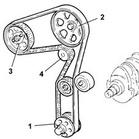

Introduction - TIMING SYSTEM
- Path
- Descriptions > 10 ENGINE UNIT > 1032 TIMING SYSTEM > Introduction - TIMING SYSTEM
- Kind
- system description
- Applies to
- engines: 1.9 JTD 8V; all production periods
- Interactive page
- https://sloeber94.github.io/elrnDB-fMltpl/en/#/2892427
Applies to: engines: 1.9 JTD 8V; all production periods
The timing gear is driven by a toothed belt, which is driven by a pulley mounted on the crankshaft (1).
The toothed belt drives:
- the camshaft in the cylinder head (2);
- the coolant pump (4);
- the radialjet fuel injection pump (with no synchronization requirement) (3).
